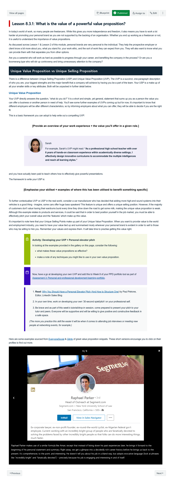
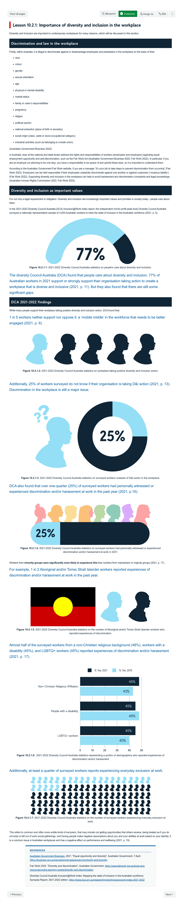

Course Description
This course aims to provide students with the skills necessary to begin their development as business professionals. Students develop their skills and knowledge in their chosen profession while also building a broader set of professional skills and establishing their professional identity.
Learning Outcomes
- Analyse your personal professional development using professional reflective practices.
- Explain the role of ethics in professions.
- Analyse and represent your personal professional learning ecosystem (incorporating formal and informal sources of learning.
- Reflect on the nature of their involvement in cooperative learning processes.
Learning Experience
Not sure what we want to do with these?
MiroBoards:
- Description: "PPD Persona Journey" Link: "https://miro.com/app/board/o9J_lpd3QN4=/"
- Description: "Iteration #2" Link: "https://miro.com/app/board/o9J_ln0uMCA=/"
- Description: "Course Planning" Link: "https://miro.com/app/board/o9J_l0xZjcM=/"
- Description: "Examples of iterations for persona development used in the course, course planning and mapping visualisation " Link: "https://miro.com/app/board/o9J_lyIZPDA=/"
Topics
- What is Personal Professional Development?
- Ethics
- Ethical Decision-Making
- Skills to help you develop self-awareness in personal and professional contexts
- Managing work groups and teams
- Professional Development
- What is professional identity?
- Personal branding as a professional
- Coping with stress in the workplace
- The importance of diversity and innovation in the workplace
- The impact of teamwork in the workplace
- Collaboration and teamwork
Development Team
Tiffany de Sousa Machado
Course Author
Lead

Stella Bachtis
Course Author
Collaborator
Rea Bachtis
Course Author
Collaborator
Rich Bartlett
Learning Designer
Lead
Assessments
-
Professional ethical behaviour statement
Case Study, Proposal
This assessment helps learners develop an understanding of ethical behaviour in an entrepreneurial business context.
20%
-
Personal professional development plan
Learning Journal, Proposal
These three tasks aim to provide learners with a self-assessment to determine their potential areas of development as a professional person. The Personal Professional Development Action Plan that aims to help them set career goals, create strategies to improving your knowledge and skills, and uncover resources to help reach their goals.
25%
-
Personal and professional development learning portfolio
Portfolio
Developing a personal and professional portfolio learners make connections between people, networks, professional communities, skills, and further professional development.
30%
-
Cooperative learning - Problem solution
Problem Solving
This assessment challenges learners to work cooperatively to develop possible solutions to challenges. Using the discussion tool, learners are asked to develop sustainable pratcices and learn to cooperate effectively in the process.
25%
Snapshots



This lesson effectively guides students in crafting a Unique Value Proposition (UVP) and Unique Selling Proposition (USP) by clearly distinguishing between the two, providing relatable examples like Sarah’s UVP, offering practical frameworks and activities for refinement, and linking external resources for further inspiration, ensuring students can confidently articulate their professional brand. " onclick="openSnapshot(this)" >
This lesson demonstrates a collaborative team effort where learning designers crafted the core content on diversity and inclusion, including its legal, ethical, and societal significance, while the media team visualised complex data using figures and charts based on the Diversity Council Australia's Inclusion@Work Index. Together, they effectively translated statistics into accessible visuals that deepen understanding, creating an engaging and informative learning experience for students. " onclick="openSnapshot(this)" >
Learning Resources
-
What is a learning ecosystem?
-
IB PPD 14 Miller’s Pyramid of assessment
-
Which school of ethics do you lean towards?
Learners are asked to find out which ethical framework or perspective drives their choices. The results help learners unpack beliefs they are strongly aware of (explicit principles) and others may be a surprise to see (implicit principles).
-
Tutorial activity 1.3: How to Respond to an Ethical Dilemma
In this interactive learners are asked how they would respond in three scenarios. There are no right or wrong answers, the aim is to help facilitate discussiong and compare selections in tutorial session with the tutor and other students.
-
The Work-life Balance Wheel
The Work-life Balance Wheel is a simple but powerful tool that helps learners visualise all the important areas of their life at once. The wheel helps learners understand which of areas of life are flourishing and which ones need the most work.